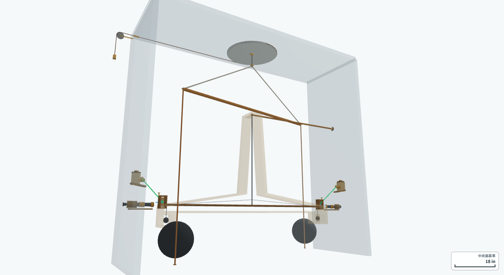
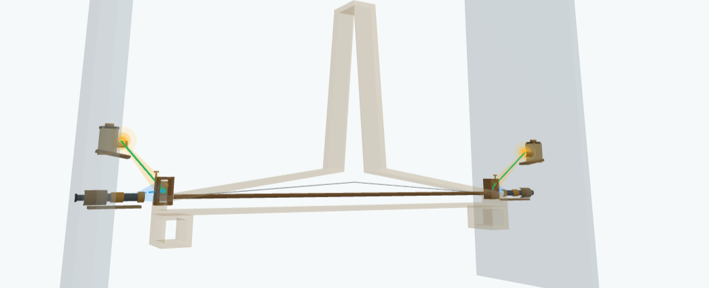
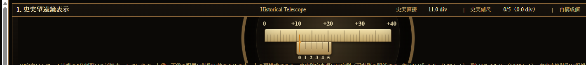
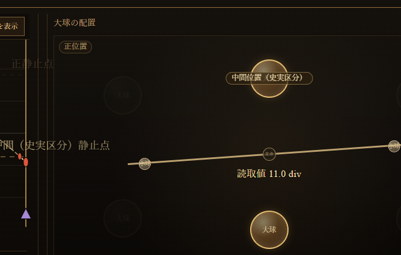
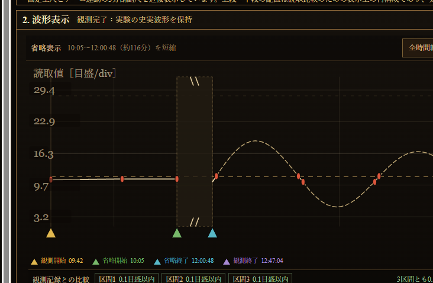
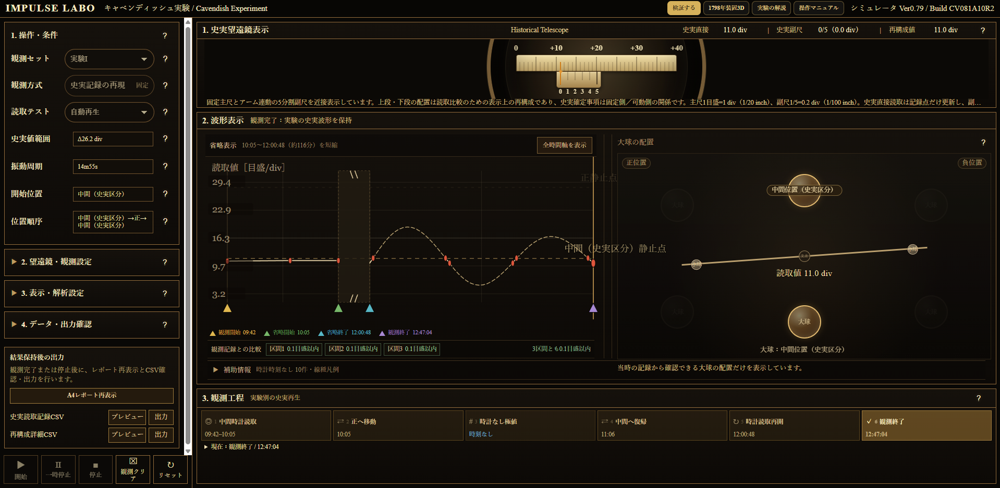

IMPULSE LABO / CAVENDISH EXPERIMENT
キャベンディッシュ実験
1798年論文をもとに、実験の目的、装置の構造、望遠鏡による読取方法、観測記録と再構成の範囲を整理します。
01
実験の概要
1797年から1798年にかけて、イギリスの科学者ヘンリー・キャベンディッシュは、トーションバランス（ねじり秤）を用いた精密な重力実験を行いました。
実験では、大球と小球の間に働く非常に弱い万有引力によって生じるわずかな回転を、望遠鏡を用いて観測し、その読取値を記録しました。
この研究成果は、1798年に Experiments to Determine the Density of the Earth（地球の密度を求める実験）として王立協会の学術誌に発表されました。
本シミュレータは、その論文に記載された観測記録と読取方法をもとに、当時の観測過程を再構成しています。
02
トーションバランスとは — 装置の構造
トーションバランスは、細いねじりワイヤーに水平アームを吊り、アーム両端の小球へ働くごく小さな力を回転として検出する装置です。大球の配置を変えると小球へ働く引力の向きが変わり、アームは回転中心のまわりでわずかに動きます。

03
キャベンディッシュはどのように観測したか
キャベンディッシュは観測室の外側に望遠鏡を設置し、壁の開口部を通して装置内部の読取部を観測しました。望遠鏡は開口部へ差し込むように読取部へ向けられ、装置へ直接触れずに、大球を移動させた後のアームの応答を待ちながら時刻と読取値を記録しました。

- 大球を配置する大球を所定の位置へ移し、小球へ働く引力の向きを変えます。
- 装置の応答を待つ水平アームはねじりワイヤーを中心に振動しながら、新しい状態へ移ります。
- 望遠鏡で読む固定目盛と動く読取部の相対位置を確認します。
- 時刻と値を記録する時計時刻がある読取値と、時刻が記載されていない極値を区別して残します。
- 配置を変えて繰り返す大球を正位置・負位置・中間位置へ切り替え、同じ観測を続けます。中間位置は原表に記録された史実区分です。
大球配置と装置機構は1798年装置3D、望遠鏡の読取表示は検証画面を基準に示しています。

04
実験で分かったこと
観測記録から、大球の配置を変えると読取値が変化することが確認されました。これは、大球と小球の間の万有引力によってトーションバランスがわずかに回転した結果です。
キャベンディッシュは、観測された変化と装置の寸法・質量・ねじり特性を用いて地球の平均密度を求めました。この実験は、後に万有引力定数を数値化するための基礎となる測定として扱われています。
1798年の論文が直接の目的として掲げたのは「地球の密度を求めること」です。本シミュレータの現公開版は、論文に残された読取記録と観測過程の再現を中心としています。
05
シミュレータでできること
本シミュレータでは、論文のExperiment I〜XVIIに対応する観測記録を選び、望遠鏡読取、大球配置、波形、観測工程を同じ時間軸で確認できます。
史実の直接観測、時刻が記載されていない極値、条件付き再構成、欠測、配置変更時刻が不確定な区間を区別して表示します。



史実の観測・記録と各表示の対応を下表に示します。
| 史実の観測・記録 | シミュレータ | 確認できる内容 |
|---|---|---|
| 望遠鏡による読取 | Historical Telescope | 固定主尺、アーム連動5分割副尺、史実直接値、史実副尺、再構成値 |
| 大球配置とアーム | Motion View | 史実区分としての正位置・負位置・中間位置、読取状態。配置座標は模式表示 |
| 時系列の読取記録 | Waveform | 直接観測、条件付き再構成、未観測・補完しない区間、欠測 |
| 観測順序 | 観測工程 | 時計付き観測、配置変更、時計時刻なしの記録、終了 |
| 観測結果の整理 | 結果サマリー | 位置別件数・平均、配置変更による読取差、区間比較 |
| 保存記録 | PDF・CSV | A4レポート、史実読取記録CSV、再構成詳細CSV |
06
再構成の範囲
史実の直接観測と再構成値は分離して表示します。原表に時計時刻がない値へ擬似時刻を付けず、未観測区間や欠測を根拠なく補完しません。
装置画像は1798年装置3D、望遠鏡画像と画面例は検証画面を基準にしています。3Dモデルは論文と関連資料を基にした再構成であり、史実装置の全寸法、材質、室内配置を完全に確定したものではありません。
NEXT
観測記録を確認する
操作方法はマニュアルで確認できます。シミュレータではExperiment I〜XVIIを選択し、史実読取と再構成表示を比較できます。